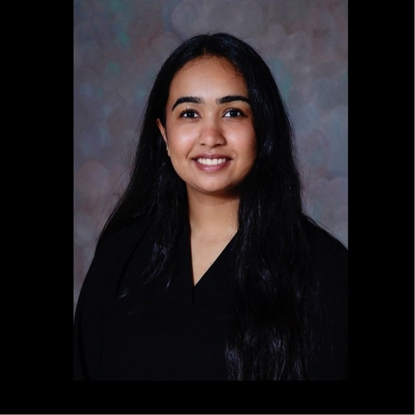

M.S. Aerospace Engineering (Space Systems Design and Engineering)
University of Central Florida
B.S. Aerospace Engineering
Florida Institute of Technology
An aerospace engineering graduate student at the University of Central Florida, specializing in Space Systems Design and Engineering, with a deep interest in space exploration, navigation systems, and autonomous technologies. Passionate about developing intelligent systems that can operate in extreme and unknown environments — whether deep in space or high in the atmosphere. Driven by curiosity about how things move, sense, and navigate, with a particular fascination for robotics, inertial sensing, and mission design. Committed to bridging the gap between research and real-world engineering, with a hands-on approach to problem-solving and a drive to contribute to missions that expand humanity's reach beyond Earth.
Phone: +1(321)977-2675
Email: ishatrada1609@gmail.com